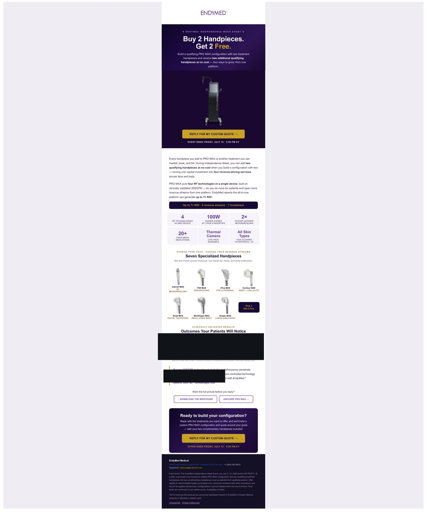
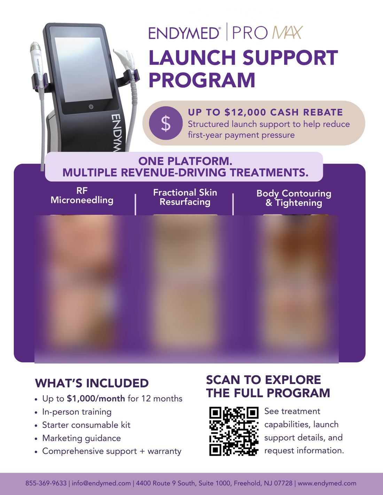
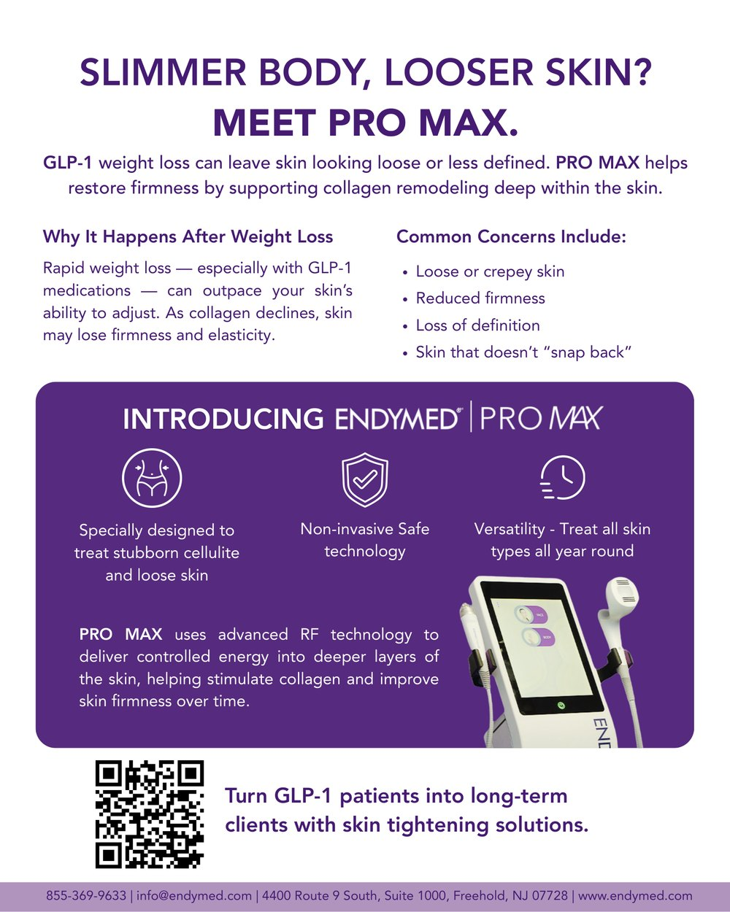
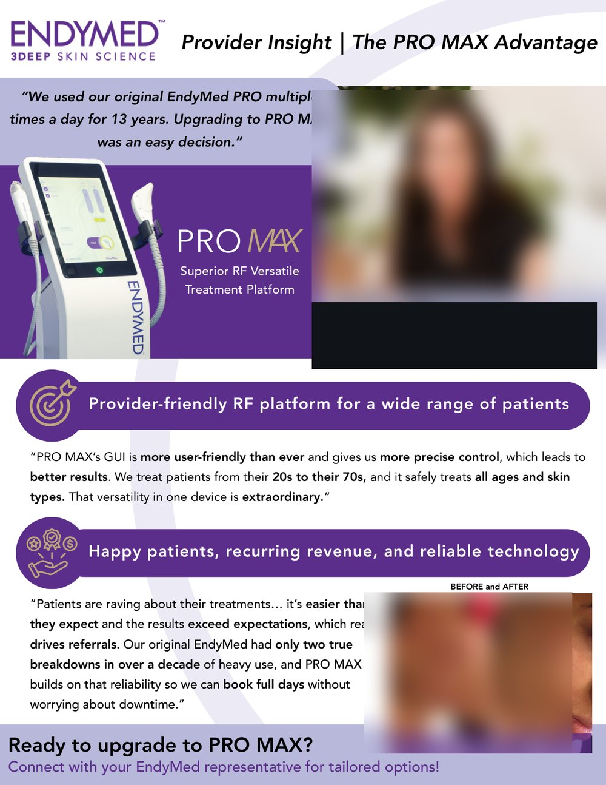

Portfolio
The creative and commercial side of the work — running national events, standardizing the follow-up that turns them into pipeline, and designing campaigns for distinct audiences.
Running national events, then standardizing the follow-up that converts them.
I standardized how EndyMed runs national trade shows end to end — and, just as important, the automated follow-up that turns event leads into pipeline.
Event rollout deck. The strategy I used to deploy events to the team — calendar invites, a responsibilities matrix, QR-driven lead capture per territory, and an automated post-event email sequence (redacted):
The standardized follow-up. Every event feeds an automated Mailchimp sequence:

Events stopped being one-off scrambles and became a repeatable engine — captured, routed, and followed up automatically.
One funnel design, tuned for three very different audiences.
Each campaign is a connected digital funnel — a flyer drives to a dedicated landing page, which feeds a Mailchimp sequence, captures the lead into the CRM, and routes it to sales follow-up.
Three campaigns, three audiences. The funnel stays the same; the message changes for who's on the other end.

Audience — prospects evaluating a first capital purchase. Frames the buy around a cash rebate that reduces first-year payment pressure.

Audience — medspas, weight-loss clinics, and dermatology practices riding the GLP-1 wave. Positions PRO MAX for the skin laxity that follows rapid weight loss — turning GLP-1 patients into long-term skin-tightening clients.

Audience — existing EndyMed owners weighing an upgrade to PRO MAX. Uses peer provider proof — reliability, versatility, and recurring revenue — to move current customers up the platform. Provider identity and patient imagery redacted.
One reusable funnel, re-pointed at prospects, trend-riders, and existing owners — each with a message built for them.
Order and event operations for an aesthetic device distributor.
As Office Manager at Med Results, an aesthetic medical device distributor, I ran order and event operations and helped run national training summits end to end — from agenda and attendee communication through day-of execution. This portfolio is embedded live from Canva.